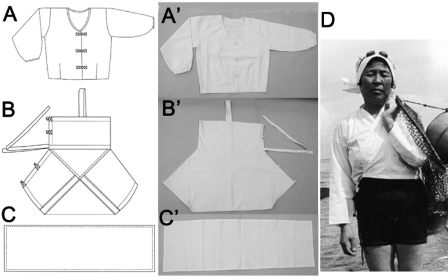
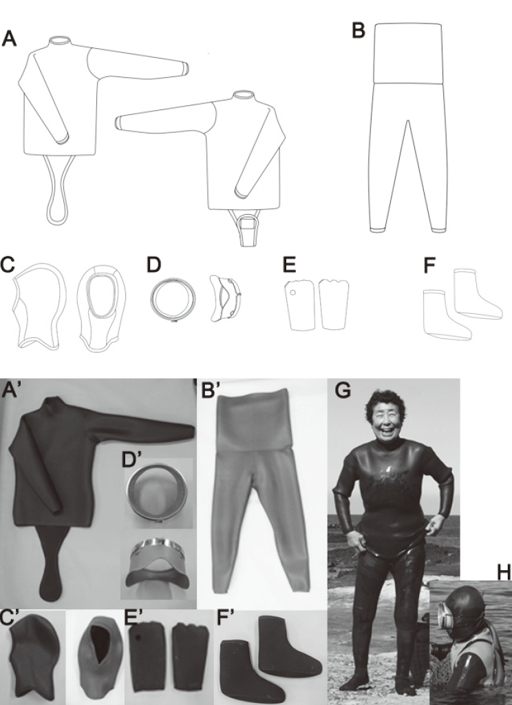

Jeju haenyeos wore a bathing suit made of cotton-broadcloth in white or black (100% cotton with 30 counts, about 0.5 mm thick, and 8.5% water absorption at a dry condition) until wetsuits were supplied. Before the broad cotton cloth was imported from Japan, the bathing suit was originally made of muslin (thin cotton cloth). Haenyeos preferred the broad cotton to the muslin bathing suit because the broad cotton was relatively thicker and stronger in salty water than the muslin cloth. The traditional cotton suit consisted of ‘so-jung-ee (bathing suit)’, ‘juck-sam (upper)’, and ‘mul-su-gun (hood)’ without any goggles (Fig. 1). In winter, haenyeos wore the juck-sam over the so-jung-ee.
Jeju haenyeos who went to Japan for diving work came back to Jeju bringing their own wetsuits from Japan in the early 1970’s. Figure 2 shows the wetsuits currently worn by haenyeos in Jeju. In those days, flippers were also supplied with the wet suits. As a result of such change, haenyeos were no longer exposed to the severe cold water. Wetsuits certainly made the work of haenyeos more comfortable and productive but longer than before.
At present, three thicknesses of wetsuits are supplied in Jeju by season: 4 mm in thickness for summer, 5 mm for spring and autumn, and 6-7 mm in winter. Due to the dissemination of swimming goggles, a noticeable progress in technology occurred. The visibility during diving work was originally about 2-3 m wide, but has been broadened up to 20 m. The eye fatigue of haenyeos was also diminished. Jeju haenyeos washed the inside of the swimming goggles with mugwort to prevent the glasses from steaming up under water. An earplug made with cotton and oil or honey was also commonly used.

Fig1 Traditional cotton suit worn by Jeju haenyeo until the 1970’s (A. an outer; B. a bathing suit; C. a head cover; D. a photo of haenyeo in 1970’s (By courtesy of the Jeju Haenyeo Museum).

Fig.2 Wet suit currently worn by Jeju haenyeo. A. an upper garment; B. a lower garment; C. a hood; D. swimming goggles (wang-nun); E. gloves without fingers, F: footwear; G. Jeju haenyeo in 2014; H. Jeju haenyeo working in 2014.